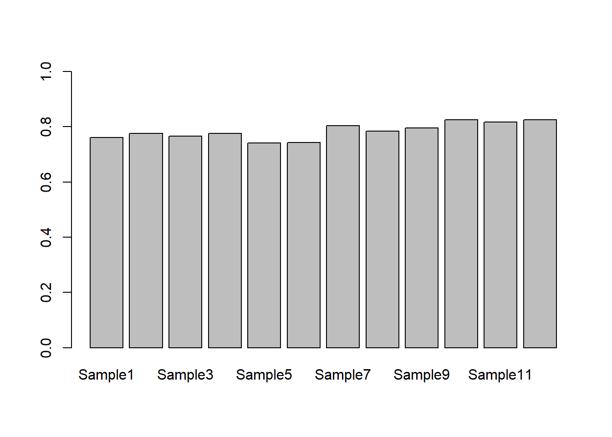
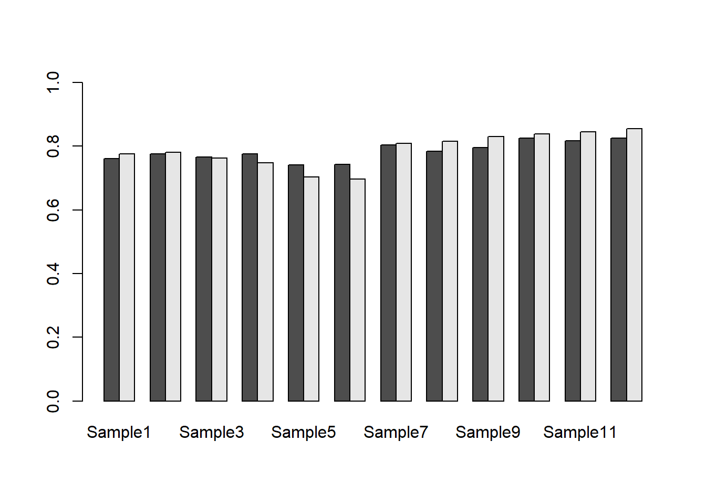

Chapter 5 R programming basics II
5.1 Functions
함수(Function)는 프로그래밍 과정에서 사용자가 필요로하는 기능을 수행하는 명령어를 말하며 다음과 같은 포멧으로 함수를 구현할 수 있습니다.
예를 들어 다음과 같은 my_sine 함수를 만들 수 있으며 x는 parameter (매개변수)이고 y는 반환값을 저장하는 지역변수 입니다.
만들어진 함수는 다음과 같이 사용할 수 있습니다. 여기서 함수로 전달되는 값 pi는 argument (전달인자) 라고 합니다. 전달인자는 함수에서 정의된 매개변수의 갯수와 같은 수의 전달인자를 입력해 주어야 합니다.
- Terminology
- function name:
my_sine - parameter:
x - argument:
pi - return value:
y
- function name:
다음 코드를 보면 전역변수 x, y는 지역변수 x, y와 독립적으로 사용됨을 알 수 있습니다.
my_half <- function(x){
y <- x/2
cat("local variable x:", x, "\n")
cat("local variable y:", y, "\n")
return(y)
}
y <- 100
x <- 20
cat("Global variable x:", x, "\n")
cat("Global variable y:", y, "\n")
my_half(5)log, sin등의 함수들은 Built-in function으로 같은 이름의 함수를 만들지 않도록 주의합니다.
5.2 Vectorized functions
초기에 R이 다른 프로그래밍 언어에 비해서 경쟁력을 갖는 이유 중 하나가 바로 이 기능 이였습니다. vector 변수에 들어있는 각 원소들에 대해서 특정 함수나 연산을 적용하고 싶을 경우 전통 방식의 C나 Java등의 언어에서는 원소의 개수만큼 반복문을 돌면서 원하는 작업을 수행 했습니다. 그러나 R의 vectorization 기능은 별도의 반복문 없이 vector 안에 있는 원소들에 대한 함수 실행 또는 연산을 수행할 수 있습니다.
x <- c(10, 20, 30)
x + x
sqrt(x)
sin(x)
log(x)
x-mean(x)
length(x)
test_scores <- c(Alice = 87, Bob = 72, James= 99)
names(test_scores)5.2.1 Exercise 4-1
다음은 한 다이어트 프로그램의 수행 전 후의 다섯 명의 몸무게이다.

- 각각을 before 와 after 이름의 변수에 저장 후 몸무게 값의 변화량을 계산하시오.
- before값들의 평균을 구하시오 (mean() 함수 사용)
- my_mean 이라는 이름의 함수로 평균을 구하는 코드를 작성 하시오 (빌트인 함수 사용하지 않음)
- 함수이름: my_mean
- parameter: x
- return 값: y
- (x[1]+x[2]+x[3]+x[4]+x[5])/5
- 빌트인 함수 sum()과 length()를 이용해 동일한 기능을 하는 함수를 작성하시오
- 함수이름 my_mean2
- sum(), length() 사용
5.2.2 Exercise 4-2
다음 네 학생이 있으며 “John”,“James”,“Sara”, “Lilly” 각 나이는 다음과 같음. 21, 55, 23, 53. ages 라는 변수를 생성하고 각 나이를 저장한 후 who라는 이름의 함수를 만들어서 50살 이상인 사람의 이름을 출력하는 함수를 만드시오.
- ages라는 변수에 나이 저장, c() 함수 이용, vector 형태 저장
- names() 함수 이용해서 각 ages 벡터의 각 요소에 이름 붙이기
- which() 함수 사용해서 나이가 50보다 큰 인덱스 찾고 해당 인덱스 값 출력 하기
- ages를 메개변수로 받아서 나이가 50보다 큰 인덱스 찾고 해당 인덱스의 값을 반환해 주는 who 함수 만들고 사용
5.3 if statements
R에서의 제어문의 사용은 다른 프로그래밍 언어와 거의 유사합니다. 먼저 if 는 다음과 같은 형식으로 사용되며 () 안에 특정 조건 판단을 위한 표현이 들어갑니다.
특히 condition은 하나의 원소에 대한 조건 판단문으로 T 또는 F 값 하나만을 반환하는 문장이어야 합니다. 위 코드는 만약 condition 조건이 True 이면 expr_1를 실행하고 False이면 expr_2를 실행하라는 명령입니다. condition 안에서 사용되는 비교 연산자들은 다음과 같습니다.

x <- 2
if(x%%2 == 1){
cat("Odd")
}else{
cat("Even")
}
x <- 5
if(x > 0 & x < 4){
print("Positive number less than four")
}
if(x > 0) print("Positive number")
x <- -5
if(x > 0){
print("Non-negative number")
} else if(x <= 0 & x > -5){
print("Negative number greater than -5")
} else {
print("Negative number less than -5")
}
if(x > 0)
print("Non-negative number")
else
print("Negative number")5.3.1 Exercise 4-3
1부터 100까지 수를 x라는 변수에 저장하고 홀수 이거나 10의 배수인 수들을 골라내는 코드를 작성 하시오 (%% 나머지 연산, if문 사용)
5.4 for, repeat, while
5.5 File read and write
텍스트 파일의 경우 아래와 같이 csv 또는 txt 파일로 저장하여 메모장으로 열어 확인할 수 있으며 읽어올 경우 구분자 (sep 파라메터) 나 header를 (header 파라메터) 읽을지 읽지 않을지 등을 옵션으로 지정할 수 있습니다.
x <- c(1,2,3,4)
y <- c(5,6,7,8)
xy<-data.frame(x=x, y=y)
write.table(xy, file="table_write.txt")
write.table(xy, file="table_write.txt", quote=F)
write.table(xy, file="table_write.txt", quote=F, row.names=F)
write.table(xy, file="table_write.txt", quote=F, row.names=F, sep=",")
write.table(xy, file="table_write.csv", quote=F, row.names=F, sep=",")
mydata<-read.table(file="table_write.csv")
mydata<-read.table(file="table_write.csv", sep=",")
mydata<-read.table(file="table_write.csv", sep=",", header=T)
plot(mydata$x, mydata$z)5.6 Excel file read and write
엑셀파일은 readxl 이라는 R 패키지를 활용하여 읽거나 쓸 수 있습니다.
실습 파일은 형광 세포를 배양하여 형광리더기를 이용해 얻어진 실제 데이터이며 Rprog04-fl.xls 에서 다운로드 받을 수 있습니다. read_excel 함수를 이용하여 파일의 내용을 읽어오면 기본 자료형이 tibble 입니다. tibble은 최근 많이 쓰이는 R object로 data.frame과 유사하나 입력값의 type, name, rowname을 임으로 바꿀 수 없다는 점이 다릅니다. tibble에 익숙해지는 것이 좋으나 본 강의에서는 직관적인 진행을 위하여 data.frame으로 전환하여 사용하겠습니다.
## Warning: package 'readxl' was built under R version 3.5.3## New names:
## * `` -> ...1
## * `` -> ...2
## * `` -> ...3
## * `` -> ...4
## * `` -> ...5
## * ... and 7 more problems엑셀파일에는 두 종류의 (OD600nm, fluorescence) 데이터가 저장되어 있으며 각각을 위에서 1~8 row 그리고 12~21 row 값들을 모두 myod와 mygfp로 저장했습니다. 그러나 엑셀파일을 보면 첫번째 컬럼에 관측값 외에 다른 정보들에 대한 텍스트가 적혀 있으며 이로 인해 행렬의 가장 첫 컬럼의 데이터 타입이 character가 되고 나머지 컬럼은 numeric으로 자동 전환 되어 data.frame 오브젝트인 mydata에 저장되게 됩니다. 따라서 아래와 같이 문자형을 숫자형으로 전환하여 추후 연산을 진행하게 됩니다.
수행한 실험의 디자인에 따라서 두 그룹으로 나누고 적절한 이름을 저장합니다.
myod_treat <- myod[2:4,]
myod_control <- myod[5:7,]
sample_names <- paste("Sample", c(1:12), sep="")
replicate_labels <- paste("Rep", c(1:3), sep="")
rownames(myod_treat) <- replicate_labels
colnames(myod_treat) <- sample_names
rownames(myod_control) <- replicate_labels
colnames(myod_control) <- sample_names
mean_treat <- colMeans(myod_treat)
mean_control <- colMeans(myod_control)위 예제의 colMean 과 같은 함수는 column 또는 row 단위로 해당하는 모든 값들에 대해 연산을 수행해주는 함수로 colMean은 평균을 계산하는 함수이고 일반적으로는 다음과 같이 apply 함수와 mean 함수를 이용해서 같은 기능을 수행할 수 있습니다. mean 함수 외 임의의 원하는 함수를 만들어 사용할 수 도 있습니다. 참고로 sd는 표준편차를 구해주는 함수 입니다.
## Rep1 Rep2 Rep3
## 0.8069922 0.7706701 0.7873404## Sample1 Sample2 Sample3 Sample4 Sample5 Sample6 Sample7 Sample8
## 0.7757480 0.7807732 0.7628736 0.7472908 0.7034527 0.6963549 0.8094640 0.8145531
## Sample9 Sample10 Sample11 Sample12
## 0.8301742 0.8390556 0.8447189 0.8555517## Sample1 Sample2 Sample3 Sample4 Sample5 Sample6 Sample7 Sample8
## 0.7757480 0.7807732 0.7628736 0.7472908 0.7034527 0.6963549 0.8094640 0.8145531
## Sample9 Sample10 Sample11 Sample12
## 0.8301742 0.8390556 0.8447189 0.8555517## Sample1 Sample2 Sample3 Sample4 Sample5 Sample6
## 0.015981356 0.023394455 0.032168135 0.034528460 0.035805916 0.014999636
## Sample7 Sample8 Sample9 Sample10 Sample11 Sample12
## 0.017801936 0.017947840 0.010253370 0.006202754 0.022386592 0.012685731본 실습에서는 각 그룹의 평균을 비교하는 막대그래프를 그려보겠습니다.



5.6.1 Exercise 4-3 standard deviation
앞서 사용한 sd 함수는 표준편차를 구해주는 기본 제공 함수입니다. 아래는 같은 기능을 하는 함수를 만들어 보는 실습 예제 입니다.
## exercise 3-2
mysd <- function(x){
xmean <- sum(x)/length(x)
tmpdif <- x-xmean
xvar <- sum(tmpdif^2)/(length(x)-1)
xsd <- sqrt(xvar)
return(xsd)
}
x <- sample(1:100, 10)
mysd(x)## [1] 32.86403## [1] 32.864035.6.2 Exercise 4-4 barplot with error bars
앞서 그려본 막대그래프에 에러바를 넣어보는 코드 입니다. 먼저 평균과 표준편차 데이터를 apply 함수를 통해 얻어내고 barplot을 수행합니다. 에러바의 경우 arrows 함수를 사용하는데 사용되는 파라메터의 입력되는 값을 바꿔서 그림을 그려보면 그 의미를 파악하는데 도움이 되겠습니다.
## Exercise 3-3) barplot with sd
control_mean <- apply(myod_control, 2, function(x){mean(x)})
control_sd <- apply(myod_control, 2, mysd)
barplot(control_mean, width=0.83, space=0.2, col="gray", ylim=c(0,1))
arrows(0.5, control_mean[1], 0.5, control_mean[1]+control_sd[1], length=0.1, angle=90)
arrows(0.5, control_mean[1], 0.5, control_mean[1]-control_sd[1], length=0.1, angle=90)
lab <- paste("SD:", round(control_mean[1]+control_sd[1],1))
text(0.5, control_mean[1]+control_sd[1]+0.05, labels = lab)
arrows(1.5, control_mean[2], 1.5, control_mean[2]+control_sd[2], length=0.1, angle=90)
arrows(1.5, control_mean[2], 1.5, control_mean[2]-control_sd[2], length=0.1, angle=90)
lab <- paste("SD:", round(control_mean[2]+control_sd[2],1))
text(1.5, control_mean[2]+control_sd[2]+0.05, labels = lab)
그러나 위 12개의 bar 모두에 대해서 arrows 함수를 그리기 보다는 for 문을 이용한 반복 실행을 수행하는 것이 효율적 입니다. for 문의 사용 형식과 반복 횟수 그리고 반복하며 변화되는 값을 갖는 변수에 대한 의미를 파악하고 사용하는 것이 중요합니다. for문의 사용법은 강의노트 를 참고하세요.
## Exercise 3-4) barplot with sd using for
barplot(control_mean, width=0.83, space=0.2, col="gray", ylim=c(0,1))
for(i in 1:length(control_mean)){
xpos <- 0.5+i-1
arrows(xpos, control_mean[i], xpos, control_mean[i]+control_sd[i], length=0.1, angle=90)
arrows(xpos, control_mean[i], xpos, control_mean[i]-control_sd[i], length=0.1, angle=90)
lab <- paste("SD:", round(control_mean[i]+control_sd[i],1))
text(xpos, control_mean[i]+control_sd[i]+0.05, labels = lab)
}
마지막으로 실습 예제 4-5는 엑셀파일 이름을 argument로 받아서 파일 내용을 읽고 데이터를 두 그룹으로 나누어 평균을 계산한 후 plot까지 그려주는 함수를 만드는 실습 예제 입니다. 다음 시간에 이어서 합니다.

이 저작물은 크리에이티브 커먼즈 저작자표시-비영리-변경금지 4.0 국제 라이선스에 따라 이용할 수 있습니다.